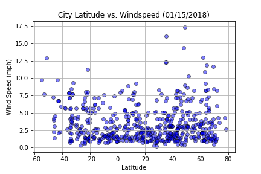
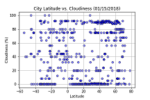

Summary: Latitude vs. Windspeed

There doesn't seem to be a lot of connection between wind speed vs. latitude. There are a few locations with some gusting winds but most locations are pretty calm below 3 mph. Since this is a snapshot of a particular day there mostlikely greater variablity at other times of the year.
Visualizations


